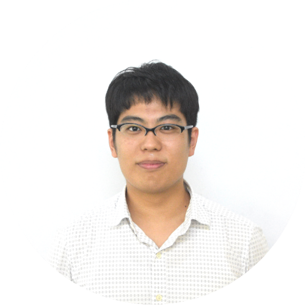
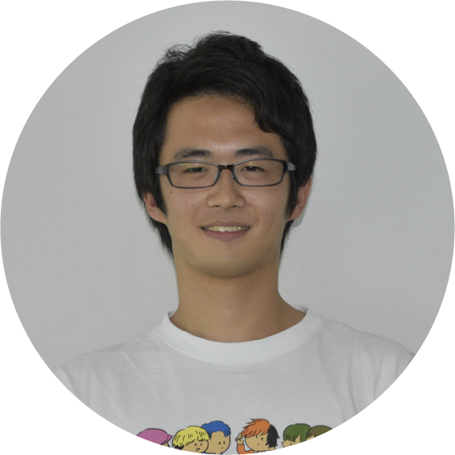
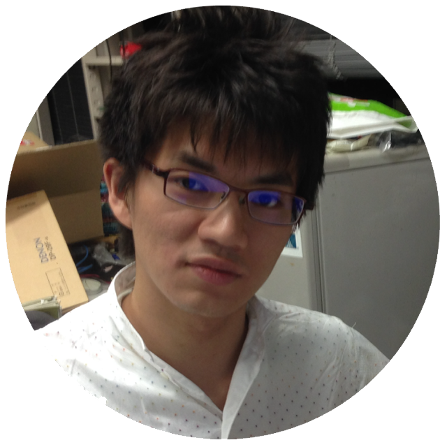
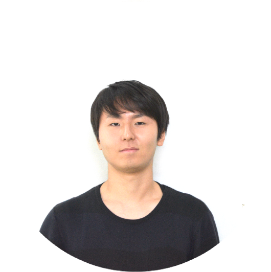
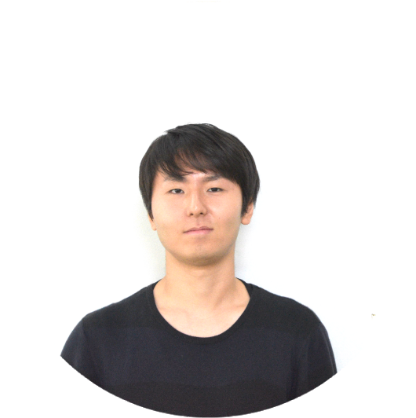
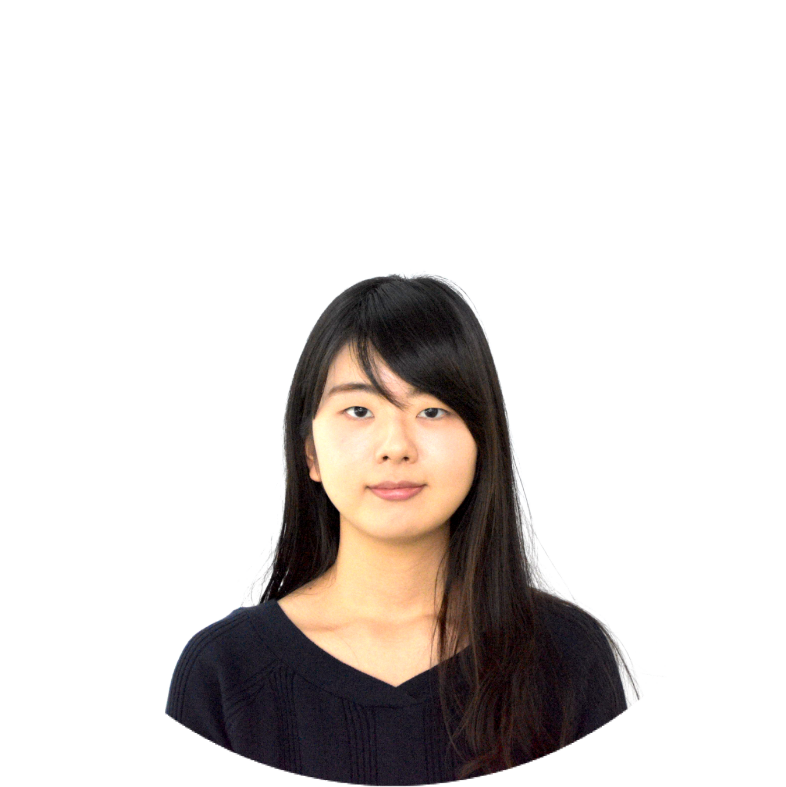

Members

Faculty 教官
 rdv
rdv
Rodney Van Meter 教授 個人サイト
慶應義塾大学環境情報学部 (Faculty of Environment and Information Studies at Keio University associate professor)
慶應義塾大学政策・メディア研究科委員 (Graduate school of Media and Governance at Keio University)
佐藤貴彦 政策・メディア研究科特任助教
Master's Course 修士過程
Undergraduate 学部生
 parton(B4)  cocori(B4) rum(B4)
rum(B4)
 shingy(B2)
shingy(B2) martian(B1)
martian(B1)
Old Boys, Old Girls (Alumni) 過去のメンバー
kurosagi kaaki(-2019)
kaaki(-2019)
 sayyor(-2019)
sayyor(-2019)
 william(-2019)
william(-2019) chanou(-2018)

takafumi(-2017)
chanou(-2018)

takafumi(-2017) yume(-2017)
 bays(-2017)
bays(-2017)